1. 소프트웨어 품질관리 개요 (원본 p.6-8)
가. 소프트웨어 품질의 정의와 특성
소프트웨어 품질이란 주어진 요구사항을 만족시키는 소프트웨어 제품의 특성과 생산성을 말한다. 납기 지연, 고객 요구 불만족, 과다한 유지보수 등 질적인 문제와 시스템의 거대화·고기능화에 따른 복잡도 증가로 인해 종합적 품질보증 활동의 필요성이 대두되었고, ISO9000-3 등의 품질관리 표준이 제정되었다.
- 품질은 상대적 개념이다 — 정량적 측정이 어렵고 이해관계자에 따라 판단이 다르다.
- 품질은 비용·시간·인력·도구 등 여러 자원에 종속적이며, 적정선에서 타협해야 하는 대상이다.
- 품질 요소들은 서로 연관성을 가지므로 하나의 특성만 극대화할 수 없다(Trade-off).
나. 소프트웨어 품질의 표준 모델
| 구분 | 종류 |
|---|---|
| SW 제품 품질 | ISO 9126, ISO 14598, ISO 12119 |
| SW 프로세스 품질 | ISO 12207, CMMI, SPICE |
| 품질 경영 | Six Sigma, ISO 9000 |
다. 소프트웨어 품질관리의 연관 개념
| 구분 | 개념 |
|---|---|
| 품질관리 계획수립(Quality Plan) | 적용할 품질의 표준을 식별하고 적용 방법을 결정하는 계획 |
| 품질보증(Quality Assurance) | 소프트웨어 제품과 요구사항의 일치 여부를 제3자 입장에서 검토하는 활동(Review, Inspection, Walk-through) |
| 품질통제(Quality Control) | 품질 활동의 실행 결과를 감시·기록하며 성과를 평가하고 필요한 변경 권고안을 제시하는 활동 |
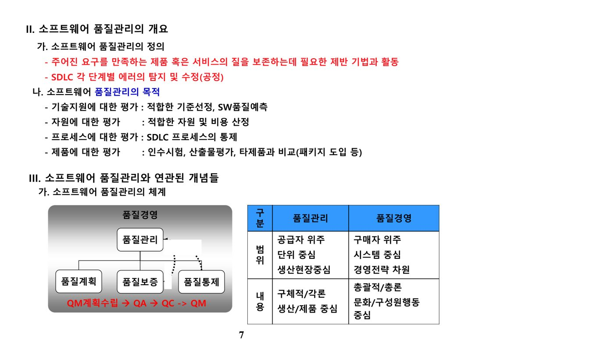
2. ISO/IEC 9126 — SW 품질특성 표준 (원본 p.9-24)
가. ISO/IEC 9126의 개요
ISO/IEC 9126은 1980년대 후반 ISO가 사용자 관점에서 소프트웨어 품질 특성을 표준화하기 위해 제정한 국제표준으로, 품질보증을 위한 구체적 정의와 척도를 제공한다.
| 구성 | 내용 |
|---|---|
| ISO 9126-1 | 품질특성(6개) 및 부특성(21개) 정의. 구매·요구명세·개발·사용·평가·지원·유지보수·품질보증 등 다양한 관점에서 품질을 정의·평가할 수 있도록 함 |
| ISO 9126-2 | 외부메트릭 — 실행코드, 테스트케이스 실행 등 SW 완성 단계의 측정. 사용자·관리자 관점에서 최종 제품의 품질요구사항과 설계목표를 명세할 때 적용 |
| ISO 9126-3 | 내부메트릭 — 소스코드, 분석문서, 설계명세 등 SW 개발 단계의 측정. SDLC 단계별 산출물 평가 요인에 따른 측정표를 구축해 평가 |
| ISO 9126-4 | 사용 중 품질 — 효율성·생산성·안전성·만족성의 목표를 실제 사용 환경에서 달성하는 소프트웨어의 능력을 측정 |
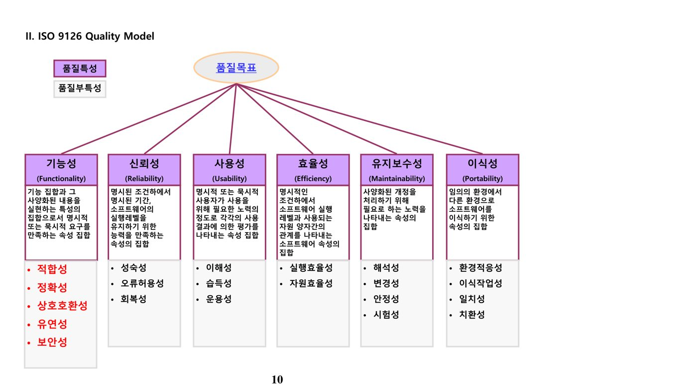
나. ISO/IEC 9126의 6대 품질특성과 부특성
| 품질특성 | 부특성 |
|---|---|
| 기능성(Functionality) | 적절성, 정확성, 상호운용성, 보안성, 준수성 |
| 신뢰성(Reliability) | 성숙성, 결함 허용성(Fault Tolerance), 회복성 |
| 사용성(Usability) | 이해성(Understandability), 학습성(Learnability), 운용성(Operability) |
| 효율성(Efficiency) | 시간 효율성, 자원 효율성 |
| 유지보수성(Maintainability) | 분석성, 변경성, 안정성, 시험성(Testability) |
| 이식성(Portability) | 적응성, 설치성, 대체성, 공존성 |
ISO/IEC 25010은 ISO/IEC 9126-2가 제시한 6대 품질특성에 상호운용성과 보안성을 독립 특성으로 추가하여 8개 품질특성 체계로 확장하였다.
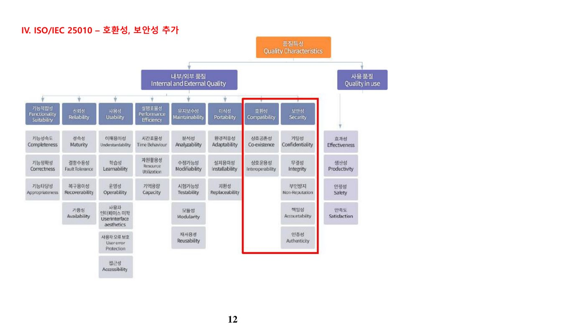
다. 품질 특성 간 상호관계와 평가 절차
ISO/IEC 9126의 품질 특성은 모든 요소를 동시에 만족시킬 수 없으므로 특성 간 Trade-off를 유지해야 한다. 예를 들어 기능성과 효율성을 동시에 극대화하기 어려운 경우가 많다.
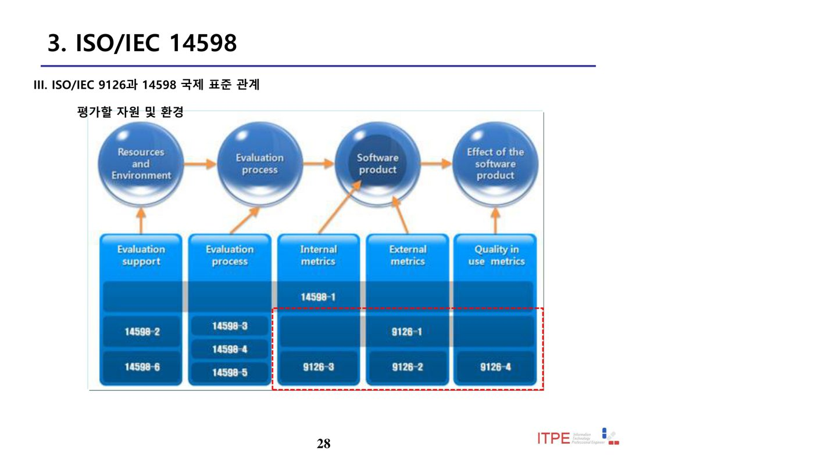
라. 객체지향 소프트웨어 품질 메트릭(CK Metrics)
Chidamber와 Kemerer가 제안한 CK 메트릭은 객체지향 소프트웨어의 품질을 정량적으로 측정하는 대표적인 메트릭 유형이다.
| 메트릭 | 설명 |
|---|---|
| WMC(Weighted Methods per Class) | 클래스 내 모든 메소드의 순환복잡도(Cyclomatic Complexity) 합. 값이 클수록 테스트 경로가 많아져 유지보수가 어려워진다. |
| DIT(Depth of Inheritance Tree) | 상속 트리에서 해당 클래스의 깊이(레벨 수) |
| NOC(Number of Children) | 클래스가 직접 가지는 서브클래스의 개수. 값이 클수록 변경의 영향을 많이 받는다. |
| CBO(Coupling Between Object Classes) | 특정 클래스가 결합하는(상속 관계가 아닌) 다른 클래스의 개수 |
| RFC(Response For a Class) | 클래스의 메소드와 그 메소드가 호출하는 메소드의 총 개수. 값이 클수록 테스트·디버깅이 어려워진다. |
3. ISO/IEC 14598 / 25040~41 — SW 제품 평가절차 표준 (원본 p.25-29)
가. ISO/IEC 14598의 평가 특징
| 특징 | 내용 |
|---|---|
| 반복성(Repeatability) | 동일 평가자가 동일 사양으로 평가하면 동일한 결과가 나와야 함 |
| 재생산성(Reproducibility) | 다른 평가자가 동일 제품·기준으로 다른 데이터로 측정해도 동일하다고 여겨질 결과가 나와야 함 |
| 공평성(Impartiality) | 평가가 특정 결과에 편향되지 않아야 함 — 목적의식을 갖고 결과를 임의로 유도해서는 안 됨 |
| 객관성(Objectivity) | 평가 결과가 평가자의 가정·사견에 영향받지 않아야 함(ISO 9126 시리즈 표준 준수) |
나. ISO/IEC 14598의 구성
| 구성 | 내용 |
|---|---|
| 14598-1 | General Overview — 시리즈 전체와 ISO/IEC 9126 품질모델의 관계 설명 |
| 14598-2 | Planning & Management — 제품 품질 측정 계획의 준비·구현, 평가 기능의 관리 |
| 14598-3 | Process for Developers — 개발단계에서 개발자가 준수할 표준 |
| 14598-4 | Process for Acquirers — Off-the-Shelf SW 및 기존 SW 수정 시 구매자가 준수할 표준(ISO 12207 구매절차와 연계) |
| 14598-5 | Process for Evaluators — 평가자를 위한 프로세스 |
| 14598-6 | Documentation of Evaluation Modules — 평가 모듈 문서화 |
다. 관련 서술형 기출문제
1. ISO/IEC 14598을 설명하시오. (정보관리 95회 1교시)
2. ISO/IEC 14598-1에서 정의한 소프트웨어 제품 평가(Software Product Evaluation)에 대하여 설명하시오. (컴퓨터시스템응용 96회 2교시)
4. ISO/IEC 12119(25051) — SW 패키지 품질요구 및 시험 (원본 p.30-35)
가. ISO/IEC 12119의 개요
ISO/IEC 12119(Software Packages-Quality Requirements and Testing)는 ISO/IEC 9126의 품질 모델을 기반으로 SW 패키지 제품의 품질 요구사항 및 테스팅 절차를 규정한 국제 표준이다.
| 평가대상 | 내용 |
|---|---|
| 패키지 소프트웨어 | SW 제품 문서, 사용자 문서, 실행 프로그램에 명시된 요구사항 |
| 수주개발 SW | 최종 제품과 중간 산출물 |
| Critical 수주개발 SW | 최종 제품 + 개발/유지보수 과정 전체 |
나. ISO/IEC 12119의 평가 대상 및 절차
| 평가대상 | 설명 |
|---|---|
| 제품설명서 | 제품의 기능별 특징·능력·한계 사항이 사용자에게 정확히 전달되도록 명시하는지 평가 |
| 사용자문서 | 작업 수행 방법·유지보수 등에 대한 설명이 정확·상세하게 제공되는지 평가 |
| 실행프로그램 | 실제 소프트웨어를 실행할 수 있도록 명확·상세하게 기술되었는지 평가 |
| 절차 | 설명 |
|---|---|
| 제품 설명서 시험 → 사용자 문서 시험 → 실행 프로그램 시험 | 각 문서·프로그램의 요구·권고사항 수행 여부를 순차 시험 |
| 시험기록 → 시험 보고서 작성 | 반복 가능하도록 충분한 정보를 기록하고, 시험의 목적과 결과를 요약 |
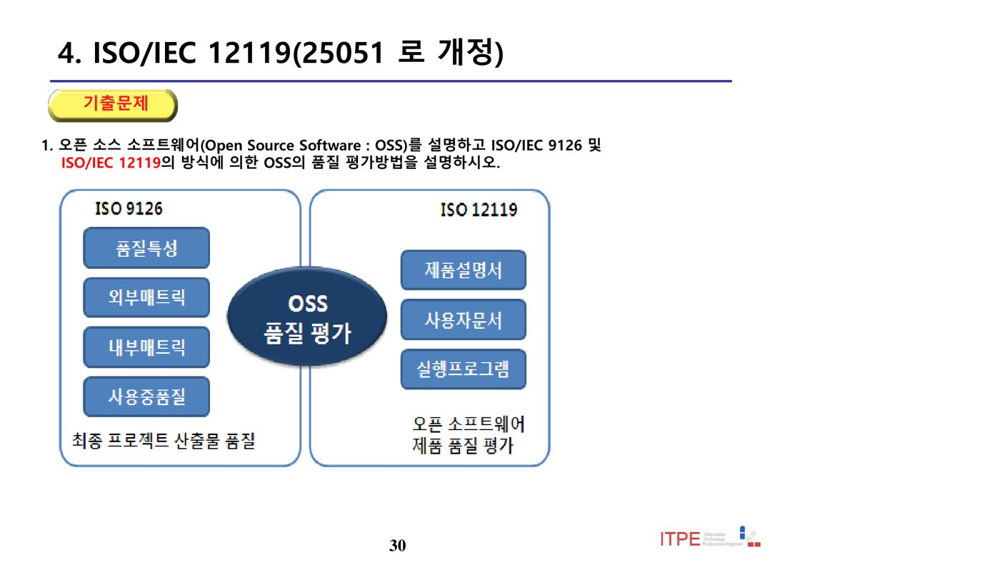
5. ISO/IEC 25000(SQuaRE) — 통합 품질표준 (원본 p.36-41)
가. ISO/IEC 25000의 배경과 정의
SW 제품 품질모델/특성(ISO 9126), SW 제품 품질 평가지침(ISO 14598), SW 패키지 제품 품질 요구 및 시험(ISO 12119)이 서로 다른 시리즈 번호로 이루어져 사용자에게 혼란을 줄 수 있어, 품질 요구 명세부터 품질 판정까지 일관된 지침서로 통합한 것이 ISO/IEC 25000(SQuaRE, Software product Quality Requirements and Evaluation)이다. SW 개발공정 각 단계의 산출물이 사용자 요구를 만족하는지 검증하기 위한 품질 측정·평가 모델, 측정기법, 평가방안의 국제표준이다.
나. ISO/IEC 25000의 5대 구성요소
| 구성요소 | 설명 |
|---|---|
| Software Quality Requirement | 소프트웨어 품질 요구사항 설정 프로세스 |
| Software Quality Model | 소프트웨어 품질 모델 제시 |
| Software Quality Management | 품질 관리 지침 정의(가이드라인 및 품질평가 관리에 관한 표준) |
| Software Quality Measurement | 소프트웨어 품질 측정 Metrics 정의 |
| Software Quality Evaluation | 소프트웨어 품질 평가 정의 및 지침 |
다. 관련 서술형 기출문제
1. 국가표준으로 제정된 소프트웨어 발주관리 프로세스에 대해 다음을 설명하시오: 가) 발주관리 프로세스의 핵심 수명주기 프로세스, 나) 발주 프로세스의 단계별 활동, 다) 공급 프로세스의 단계별 활동. (관리 81회 4교시)
2. ISO 12207 국제 표준 중에서 지원 프로세스에 대해 설명하시오. (관리 87회 1교시)
6. ISO/IEC 12207 — SW 생명주기 프로세스 표준 (원본 p.42-48)
가. ISO 12207의 정의와 특징
ISO 12207은 체계적인 소프트웨어 획득·공급·개발·운영·유지보수를 위해 소프트웨어 생명주기 공정(SDLC Process) 표준을 제공함으로써, 실무자들이 동일한 언어로 의사소통할 수 있는 기본 틀을 제공하기 위한 프로세스 표준이다. ISO9000-3·9001·9126이 품질시스템 요구사항과 품질특성을 다뤘지만 SW 프로세스 평가 모델은 제시하지 못했던 한계에서 등장했다.
- 다양한 형태의 SW 개발·관리에 적용 가능한 공정(Process)·활동(Activity)·세부업무(Task)를 정의
- 산출물의 명칭·형식·내용은 규정하지 않으며, 특정 생명주기나 개발방법론도 규정하지 않음(What만 정의, How는 규정하지 않음)
- 조달자·공급자의 역할을 분명히 정의해 양자 간 계약에 따른 조달에 적합하도록 개발됨
- SPICE는 ISO/IEC 12207의 기본 틀에 맞추어 개발·확장됨
- 프로세스 기술 속성: 목적, 활동, 결과물, 생명주기 소요 기간, 결함 밀도 등을 포함★ (입력물은 표준 속성에 포함되지 않는다는 점이 기출 포인트)
나. ISO 12207의 생명주기 프로세스 분류
| 분류 | 프로세스 | 내용 |
|---|---|---|
| 기본(Primary) 프로세스 | 획득(Acquisition) | 시스템·SW 제품·서비스를 획득하는 획득자(조직)가 수행할 활동을 정의 |
| 공급(Supply) | 공급자(조직)가 수행할 활동을 정의 | |
| 개발(Development) | 개발자(조직)가 소프트웨어 제품을 정의·개발하는 활동을 정의 | |
| 운영(Operation) | 실제 환경에서 운영 서비스를 제공하는 활동을 정의 | |
| 유지보수(Maintenance) | 유지보수 서비스를 제공하는 활동을 정의 | |
| 지원(Supporting) 프로세스 | 문서화, 품질보증, 형상관리, 검증 | 산출물 기록 활동, 요구사항 적합성 보증, 구성관리, 소프트웨어 제품 검증 |
| 확인, 문제해결 | 소프트웨어 제품 확인 활동, 발견된 부적합사항 분석·제거 | |
| 합동검토, 감사 | 활동 상태·제품 평가, 요구사항·계획·계약에 대한 적합성 결정 | |
| (8개 지원 프로세스로 구성) | ||
| 조직(Organizational) 프로세스 | 기반구조(Infrastructure) | 생명주기 프로세스의 기본 구조 확립 활동 |
| 관리(Management) | 프로젝트 관리를 포함한 기본 관리 활동 | |
| 개선(Improvement) | 조직이 생명주기 프로세스를 확립·측정·통제·개선하는 활동 | |
| 훈련(Training) | 적절하게 훈련된 요원을 제공하기 위한 활동 |
7. CMMI — 능력성숙도 통합모델 (원본 p.49-65)
가. CMMI의 정의와 특징
CMMI(Capability Maturity Model Integration)는 카네기멜론대학 SEI(Software Engineering Institute)가 개발한, 여러 CMM 모델을 포괄하는 SW 개발 능력·성숙도 평가 및 지속적 품질 개선 모델이다. 여러 CMM 모델의 효과적인 특성과 공통 요소를 포함해 공통 용어·교육을 제공하고, 통합된 평가 방법(SCAMPI)을 지원한다. 시스템 공학과 소프트웨어 공학의 기능적 통합에 중점을 두며 다른 분야로 확장 가능한 구조를 가진다. CMM은 2005년까지만 SEI에서 지원했고 이후 CMMI(현재 v1.3)로 통합되었다.
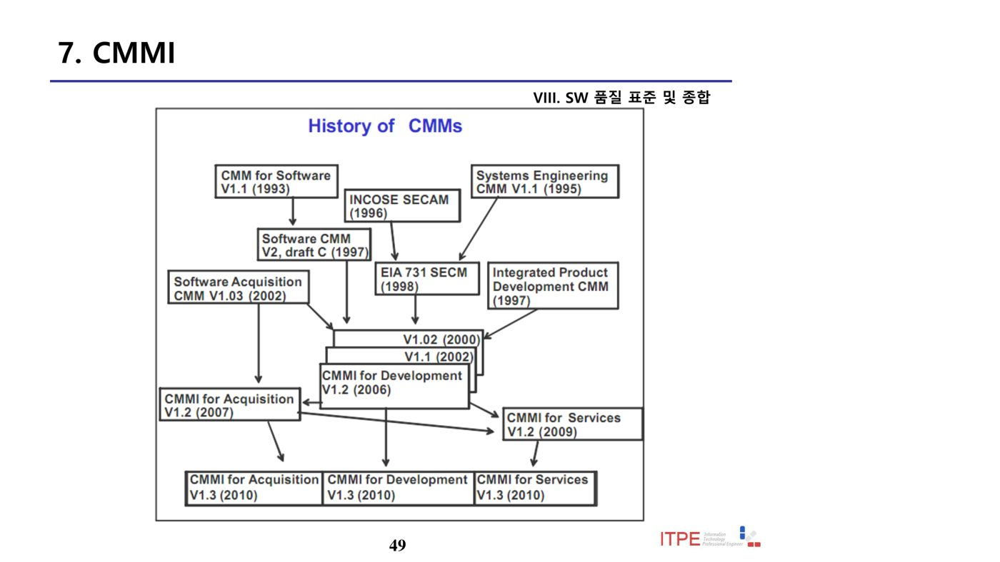
| CMMI 모델 | 설명 |
|---|---|
| CMMI-ACQ | CMMI for Acquisition — 시스템·서비스 조달·획득 역량 성숙도 평가 모델 |
| CMMI-DEV | CMMI for Development(일반적으로 말하는 "CMMI") — 시스템·SW·서비스 개발 역량 성숙도 평가 모델 |
| CMMI-SVC | CMMI for Service — 서비스 제공 및 관리 역량 성숙도 평가 모델 |
나. 단계적 표현(Staged)과 연속적 표현(Continuous)
| 구분 | 단계적 표현(Staged) | 연속적 표현(Continuous) |
|---|---|---|
| 그룹화 기준 | Maturity Level(성숙도 수준)로 그룹화 | Capability Level(능력 수준)로 그룹화 |
| 평가 단계 | 1~5단계 | 0~3단계 |
| 예제 모델 | SW-CMM | SE-CMM |
| 특징 | 가장 기초적인 절차부터 상위 수준까지 프로세스 영역을 단계별로 제시. 널리 입증된 순서로 체계적 개선을 제공하며 성숙도 수준으로 조직 간 비교가 가능. SW-CMM과 유사해 SW-CMM에서 CMMI로의 이동이 용이하다. | 조직의 비즈니스 목적과 위험 완화에 맞춰 개선 순서를 정할 수 있고, 특정 프로세스 영역별 조직 간 비교가 가능하다. ISO/IEC 15504(SPICE)와 유사한 구조를 가져 프로세스 개선 모델과의 비교가 용이하다. |
다. CMMI 22 PAs(Process Areas)
| 성숙도 | Process Management | Project Management | Engineering | Support |
|---|---|---|---|---|
| Level 5(최적화) | 조직성과관리(OPM) | 원인분석 및 해결(CAR) | ||
| Level 4(정량적 관리) | 조직프로세스 성과관리(OPP) | 정량적 프로젝트관리(QPM) | ||
| Level 3(정의) | 조직프로세스 정의(OPD)·중점(OPF)·훈련(OT) | 통합프로젝트관리(IPM)·위험관리(RSKM) | 제품통합(PI)·요구사항개발(RD)·기술솔루션(TS)·확인(VAL)·검증(VER) | 의사결정분석 및 해결(DAR)·측정분석(MA) |
| Level 2(관리) | 프로젝트 감시 및 통제(PMC)·계획(PP)·요구사항관리(REQM)·공급자계약관리(SAM) | 형상관리(CM)·프로세스 및 제품품질보증(PPQA) |
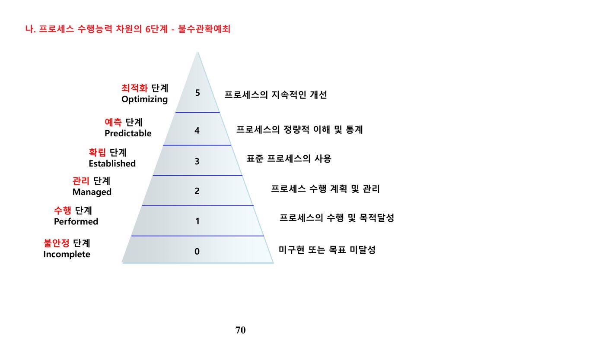
프로세스의 능력 수준(Capability Level)은 (0) Incomplete, (1) Performed, (2) Managed, (3) Defined의 4단계로 측정되며, 각 PA에 제시된 Specific Goal과 Generic Goal의 달성 정도에 따라 결정된다.
라. 관련 서술형 기출문제
1. CMMI의 Continuous Model과 Staged Model을 비교하시오. (조직응용 84회 1교시)
2. CMM과 CMMI(Capability Maturity Model Integration)를 비교 설명하시오. (조직응용 75회 1교시)
3. CMMI의 단계적 표현방법에서의 모델 구성 요소를 설명하고, 통계적 프로세스 관리에 사용되는 파레토 차트·산점도·관리도를 설명하시오. (조직응용 84회 1교시)
4. TMMi(Test Maturity Model Integration)와 CMMi를 각각 설명하시오. (컴퓨터시스템응용 96회 2교시)
8. SPICE(ISO/IEC 15504) (원본 p.66-76)
가. SPICE의 정의와 등장 배경
SPICE(Software Process Improvement and Capability dEtermination)는 SEI의 CMM, Bell의 TRILLIUM, Esprit의 BootStrap 등 여러 프로세스 개선모형을 국제표준으로 통합한 ISO의 소프트웨어 프로세스 모형이다. ISO9000-3이 SW 분야 특성을 충분히 개선하지 못한 점, ISO 12207이 What만 정의하고 How를 제시하지 못한 단점을 보완하기 위해 등장했다. SW 프로세스 개선과 SW 프로세스 수행능력 수준 판단을 기본 목표로 한다.
나. SPICE의 2차원 평가모델
SPICE는 ISO 12207의 소프트웨어 생명주기 프로세스를 기반으로 하며, 프로세스 차원(Process Dimension)과 프로세스 수행능력 차원(Process Capability Dimension)의 2차원 평가 모델을 사용한다. 프로세스 차원은 5개 프로세스 범주와 세부 프로세스로 구성되고, 수행능력 차원은 0~5까지 6개의 Capability Level로 구성된다.
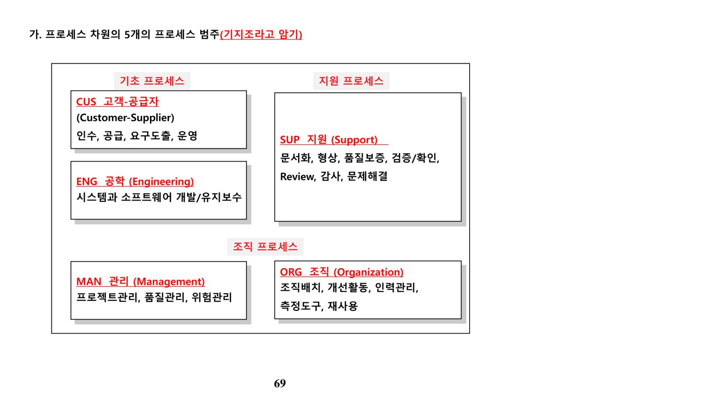
다. 프로세스 능력 수준(Capability Level)의 속성
| 능력 수준 | 프로세스 속성 | 내용 |
|---|---|---|
| 수준5 | PA5.1 프로세스 변경 속성 / PA5.2 계속적 개선 속성 | 프로세스 변경이 조직 목적 달성을 위해 통제되고, 개선이 식별·구현되는 정도 |
| 수준4 | PA4.1 프로세스 측정 속성 / PA4.2 프로세스 통제 속성 | 목적·척도를 사용해 목적 달성을 확인하고, 척도 수집·분석으로 통제되는 정도 |
| 수준3 | PA3.1 프로세스 정의 속성 / PA3.2 프로세스 지원 속성 | 조직 표준 프로세스에 기반한 정의를 사용하고, 적절한 인력·자원을 활용하는 정도 |
| 수준2 | PA2.1 수행 관리 속성 / PA2.2 작업 산출물 관리 속성 | 시간·자원 한도 내에서 관리되고, 요구사항을 만족하는 산출물을 생산하도록 관리되는 정도 |
| 수준1 | PA1.1 프로세스 수행 속성 | 프로세스 목적에 만족하는 산출물 생산을 위해 Practices를 사용하는 정도 |
라. SPICE의 프로세스 Rating 방법
Base Practice(BP, 프로세스 차원을 구성하는 각 프로세스)와 Process Attribute(PA, 모든 프로세스에 공통 적용되는 9개 능력 지표)를 기준으로, 각 프로세스의 목적 달성 여부(BP+PA1.1)를 파악한 뒤 PA의 충족도로 능력 수준을 판정한다. 충족도는 4가지 척도(N: 0~15%, P: 16~50%, L: 51~85%, F: 86~100%)로 심사하며, 모든 하위 레벨 PA가 F등급이고 자신의 모든 PA가 L 또는 F 등급인 가장 높은 레벨이 해당 프로세스의 조직 능력 수준이 된다.
9. GS 인증과 SP 인증 (원본 p.77-79, 100-104)
가. GS(Good Software) 인증 개요
GS 인증은 ISO 9126·12119·14598 등을 기반으로 국내 소프트웨어 제품의 품질을 평가·인증하는 제도이다. 도입 이후 변별력이 낮다는 비판도 있지만, 공공시장 수주를 위한 사실상의 통과의례로 자리잡았다는 산업계의 평가가 함께 존재한다.
| 지원 제도 | 내용 |
|---|---|
| 우선구매 제도 | 중소기업 SW가 GS 인증을 획득하면 공공기관의 우선구매를 지원 — 중소 SW기업의 공공시장 판로 지원 |
| 성능인증 제도 | GS 인증제품에 대해 성능검사를 면제하고 성능인증을 부여, 공공기관의 우선구매를 지원(중소기업청, 2005.7.1. 시행) |
| 성능보험 제도 | 성능인증제품이 납품된 후 성능 저하로 발생하는 계약상 손해를 배상 |
| 구매자 면책 제도 | 성능보험 가입 제품을 구매한 공공기관 구매자의 손실에 대해 면책을 부여 |
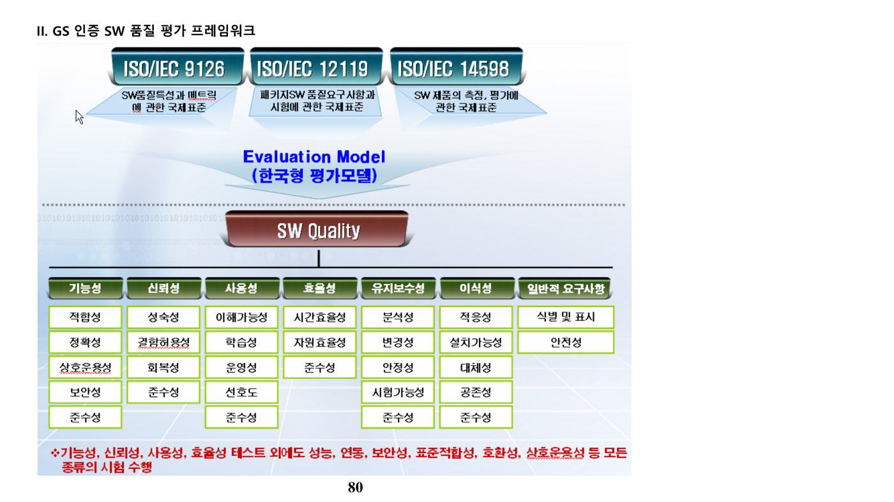
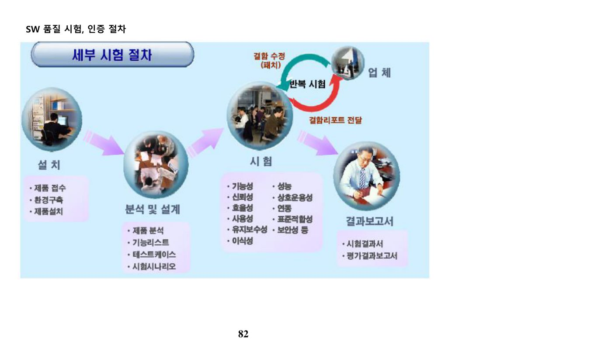
나. SP(Software Process) 인증
SP 인증은 SW산업진흥법 제23조에 근거하여 국내 SW기업의 SW사업 수행능력을 강화하고 사업 부실을 방지하기 위해, SW 개발단계별 작업절차·산출물 관리 역량 등을 분석해 SW 개발 프로세스 역량 수준을 평가·인증하는 제도이다.
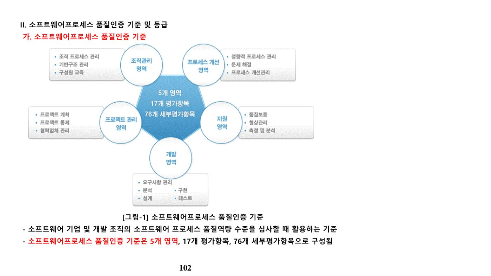
| 등급 | 내용 |
|---|---|
| 1등급 | 특정 프로젝트 수행은 가능하나 기본 활동이 안정적으로 수행되지 못해 품질·비용·납기 목표를 충족하지 못할 확률이 높은 수준. 프로세스 역량 개선 필요 |
| 2등급 | 프로젝트 차원의 프로세스가 수립되고 이를 통제해 성공적으로 프로젝트를 수행할 수 있는 역량 수준 |
| 3등급 | 조직 차원의 프로세스 체계를 정의하고 정량적 데이터 관리로 지속적 개선이 가능한 역량 수준 |
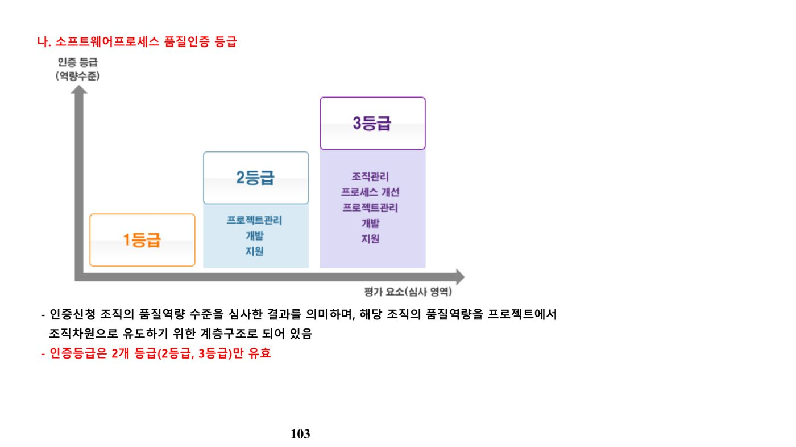
다. 관련 서술형 기출문제
품질평가 기술의 유형(SW 프로덕트 관점, 프로세스 관점 — CMMI/SPICE)을 나열·비교하고, GS 인증이 어느 유형에 속하며 어떤 모델(표준)을 따르는지 설명하시오. (관리 81회 2교시)
10. 소프트웨어 품질보증(QA) 기법 (원본 p.80-99, 106-110)
가. 소프트웨어 품질보증의 정의와 필요성
소프트웨어 품질보증(QA)은 설정된 요구사항과 SW 제품의 일치성을 확인하는 작업으로, 모든 SW 산출물이 사용에 필요한 적절한 확증을 갖추도록 준비하는 체계적인 활동이다. 사용자 요구사항 최대 만족을 통한 생산성 향상, 개발과정에서의 품질문제 조기 발견·제거, 납기 준수와 제품의 견고성·확장성, 비용·노력 절감과 재사용성 증가 등의 이유로 요구된다.
나. 품질보증 기법의 비교
| 구분 | Management Review | Technical Review | Software Inspection | Walkthrough |
|---|---|---|---|---|
| 목적 | 진행상태 점검, 시정조치 | 명세·계획 적합성 평가, 변경 무결성 보증 | 결함을 찾고 해결책을 검증 | 결함을 찾고 대안을 시험, 학습 수단으로 활용 |
| 추천 규모 | 2명 이상 | 3명 이상 | 3~6명 | 2~7명 |
| 참석자 | 경영자, 분야별 관련자 | 개발자 | 문서화된 공식 참석 대상자 | 개발자 |
| 리더십 | 선임 관리자 | 선임 엔지니어 | 훈련된 중재자 | 개발자 본인 |
| 산출물 | 경영검토보고서 | 기술검토보고서 | 검사보고서와 결함목록 | 검토 보고서 |
Inspection은 Review보다 엄격하고 정형화되어 체크리스트 등을 사용하며, 통상 3~7명이 참여하는 공식적인 동료검토(Peer Review)이다. Walk-through는 개발 참여 팀들로 구성된 비공식적 검토 과정이다. Audit(감사)은 요구분석·설계·프로그램 품질에 대해 제3자·관련 팀·조직이 계약관리·프로젝트 관리 등 전체 프로세스 준수 여부를 검토하는 활동이다.
다. Peer Review(동료검토)의 역할과 절차
| 역할 | 설명 |
|---|---|
| 프로젝트 관리자 | 동료검토 계획 수립·문서화, 자원 할당, 중재자 선정 |
| 작성자 | 검토 대상 산출물 작성, 검토자료 배포, 재작업 수행 |
| 검토자 | 체크리스트로 산출물을 검토해 결함을 식별, 기능평가·요구사항 반영 확인·인터페이스 분석 수행 |
| 중재자 | 참석자 선정·역할 할당, 검토회의 소집, 발견 결함의 제거 검증 |
| 발표자 | 산출물 분석·이해하여 회의 시 논리적 구성을 설명 |
| 기록자 | 검토결과와 식별 결함을 보고서·시스템에 기록 |
| 품질보증 담당자 | 동료검토가 계획대로 수행되었는지 확인 |
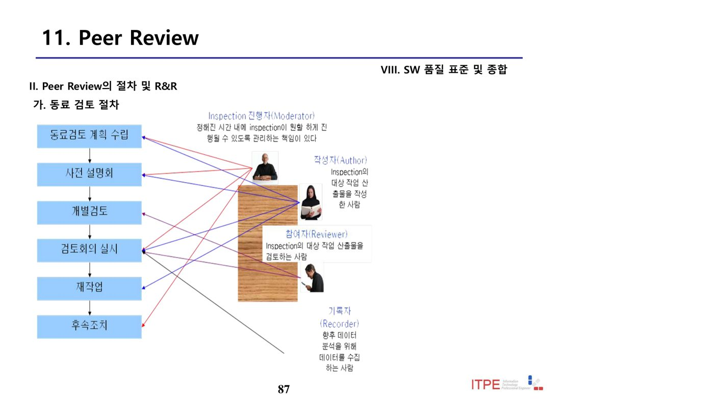
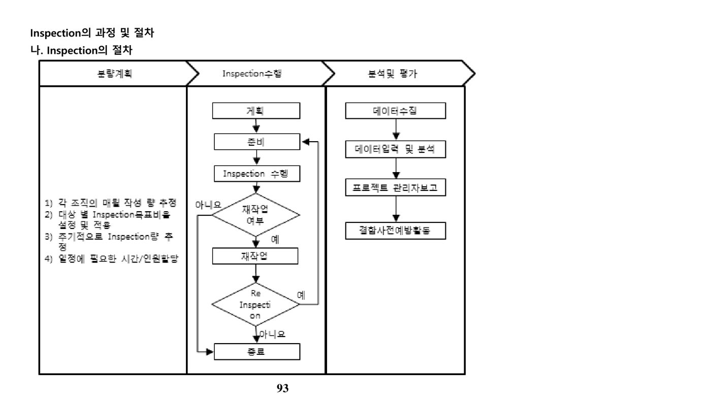
라. 소프트웨어 품질보증 활동과 SDLC 단계별 QA
| 품질보증활동 | 세부 내용 |
|---|---|
| 형상관리 | 형상항목 식별, 변경사항 관리 |
| 문서관리 | 문서관리 절차 수립, 문서 작성/보관/폐기 |
| 품질기록 | 품질보증 계획/수행/결과 기록 |
| 합동검토 | Milestone에 따라 진행 상황을 공동 검토 |
| 검증 및 확인 | 단계별 검증 및 테스트 |
| 위험관리 | 예상 위험 발견·평가·통제 |
요구분석·기본설계·상세설계·구현·통합시험·인수시험 각 단계마다 준비 활동(표준·체크리스트 확인), 시행 활동(방법론·도구 적용), 완료 활동(산출물 확인·Review)의 3단계 품질보증 활동이 반복된다. IEEE Std. 730(Software Quality Assurance Processes)은 소프트웨어 요구 검토, 예비 설계 검토, 주요 설계 검토, 소프트웨어 검사 및 검증 계획 검토, 기능 검토, 물리적 검토, 프로세스 검토, 관리 검토, 형상관리 계획 검토, 프로젝트 완료 후 검토를 기본 검토 작업으로 제시한다.
마. 통계적 품질통제(QC) 도구
품질에 대한 검사는 통계적 추출 개념을 활용하며, 대표적인 도구로 파레토 차트(Pareto Chart), 이시카와 다이어그램(Fishbone Diagram), 히스토그램(Histogram), 관리도, 산점도가 있다.
- 파레토 차트 — 발생 빈도 순으로 정렬한 히스토그램으로 문제의 우선순위를 파악. 파레토 법칙(80대20 법칙)에 근거해 상대적으로 적은 원인이 대부분의 문제를 초래함을 시각화한다.
- 이시카와(Fishbone) 다이어그램 — 결과와 이에 영향을 주는 원인들 간의 관계를 뼈대 모양으로 나타내는 특성요인도(Cause and Effect Diagram)
- 히스토그램 — 데이터가 어떻게 분포하고 있는지, 영향을 주는가를 한눈에 알 수 있도록 구간의 빈도를 막대로 나타낸 도표
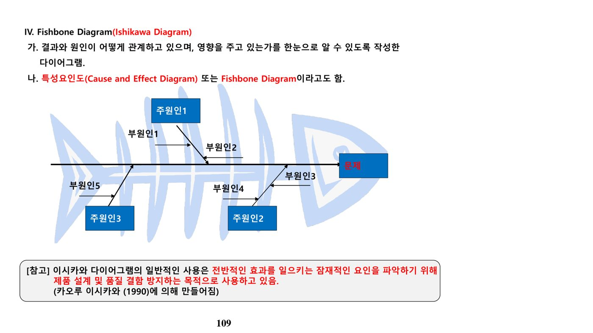
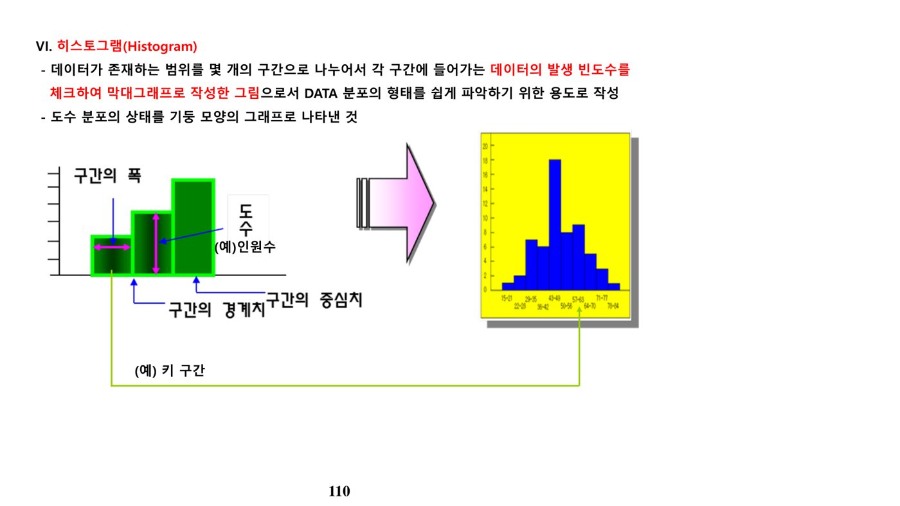
바. 관련 서술형 기출문제
1. 동료검토를 위한 코드검사표의 제어흐름 검사·인터페이스 검사 항목을 기술하시오. (관리 80회 3교시)
2. 소프트웨어 정형 기술 검토(FTR)의 중요성을 결함증폭모형을 예로 설명하시오. (관리 86회 3교시)
3. 인스펙션(Inspection) 참여자들의 역할을 인스펙션 절차 6단계별로 설명하시오: 주재자, 작성자, 인스펙션 담당자, 품질 관리자. (KPC 모의고사)
4. 웹 응용소프트웨어 프레임워크 선정을 위한 품질평가 체크리스트 항목을 설계하시오. (정보관리 84회 1교시)
11. 소프트웨어 형상관리(SCM) (원본 p.111-130)
가. 형상관리의 정의와 필요성
소프트웨어 형상관리(SCM)는 소프트웨어 생명주기 및 유지보수 과정에서 만들어지는 각 단계의 산출물을 체계적으로 관리해 품질보증 활동을 향상시키는 기법이다. 소프트웨어를 이루는 부품의 기준선(Baseline, 변경통제 시점)을 정하고 변경을 철저히 통제·관리한다. 개발 통제의 어려움, 변경 추적의 결여와 무절제한 변경, 소프트웨어 가시성(Visibility)의 결핍이 형상관리의 등장 배경이다.
| 용어 | 설명 |
|---|---|
| 기준선(Baseline) | 각 형상 항목들의 기술적 통제 시점 — 모든 변화를 통제하는 기준 시점 |
| 형상 항목(Configuration Item) | SW 개발 생명주기 중 공식적으로 정의·기술되는 관리 기본 대상 |
| 형상물(Configuration Product) | 생명주기 중 공식적으로 구현되는 형체가 있는 관리 대상(문서, H/W, S/W 제품 등) |
| 형상정보(Configuration Information) | 형상 항목 + 형상물 |
나. 형상관리의 5대 관리 기법
| 기법 | 내용 |
|---|---|
| 형상식별 | 형상관리 대상을 구분하고 관리 목록에 번호를 부여 — 문서 구조를 명료·예측 가능하게 정의 |
| 형상통제 | 형상 변경 제안을 검토·승인해 현재 Baseline에 반영되도록 통제하는 활동(변경요구관리, CCB 운영) |
| 형상감사 | Baseline의 무결성 평가 수단 — 기준선 변경 시 요구사항과의 일치 여부를 검증(Verification)·확인(Validation) |
| 형상기록(변경관리) | 형상·변경 관리 수행 결과를 기록하고 DB로 관리해 보고서를 작성 |
다. SDLC 단계별 형상관리 기준선
| 단계 | 기준선 | 산출물 |
|---|---|---|
| 계획 | 기능적 기준선(Functional Baseline) — 사용자 요구분석서 검토 시점 | 프로젝트계획서 |
| 요구분석 | 분배적 기준선(Allocated Baseline) — 요구사항 분배 검토 시점 | 분석명세서, 자료흐름도 |
| 설계 | 설계 기준선(Design Baseline) — 설계명세서 검토 시점 | 기본·상세설계서 |
| 구현 | 시험 기준선(Test Baseline) — 기능·성능 시험 완료 시점 | 실행 코드 |
| 통합 및 시험 | 제품 기준선(Product Baseline) — 상품으로서 품질을 보증하는 시점 | 통합/시스템/인증 시험보고서 |
| 설치 및 운영 | 운영 기준선(Operation Baseline) — 사용자 입장에서 SW를 평가하는 시점 | 사용자/운영자/시스템 매뉴얼 |
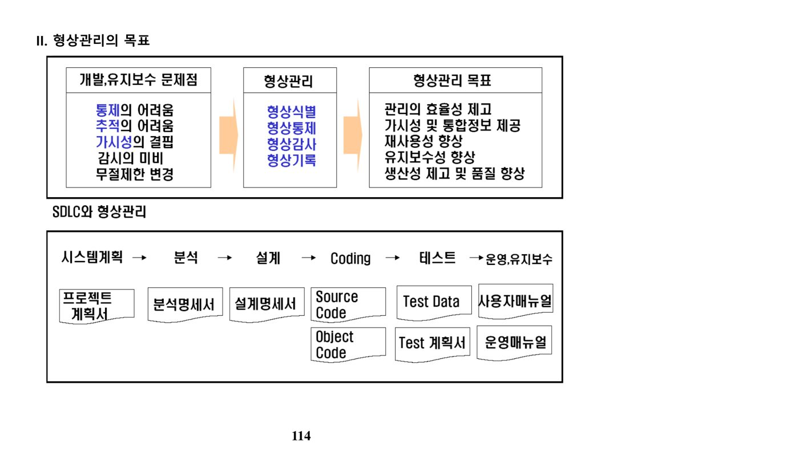
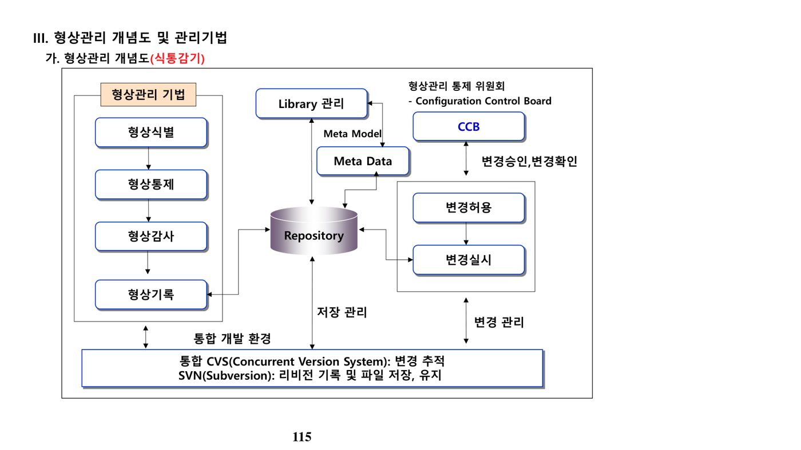
라. 형상관리와 버전관리 툴
| 구분 | Client-Server Model | Distributed Model |
|---|---|---|
| 전송방식 | commit/update | push/pull |
| 저장방식 | checkout(중앙 저장소 공유) | private clone(로컬 저장소) |
| 속도 | 네트워크 이용으로 느림 | 로컬 저장소 활용으로 빠름 |
| Offline 작업 | 서버 필요로 불가능 | 서버가 끊겨도 작업 가능 |
| 예시 | CVS, SVN, Clear Case | Git, Mercurial |
마. 관련 서술형 기출문제
1. S/W 형상관리 중 기준선(Baseline)에 대해 설명하시오. (관리 72회 1교시)
2. 형상관리의 등장배경과 성공요소에 대해 설명하시오. (조직 71회 3교시)
3. 소프트웨어 형상관리의 일환으로 수행하는 변경관리 및 배포관리(Release Management)를 설명하시오. (조직 93회 2교시)
4. 버전관리 시스템의 필요성과 유형을 설명하고 CVS, SVN, Git을 설명하시오. (정보관리 101회 4교시)
5. 소스코드 형상관리 업무 프로세스 설정과 형상통제 업무 흐름도를 설명하시오. (컴시응 105회 3교시)
12. UX/UI와 HCI (원본 p.131-139)
가. UX(User eXperience) 관점의 디자인 구성요소
HCI(Human-Computer Interaction)는 컴퓨터과학·공학·심리학·사회과학·디자인 등 다양한 분야 전문가가 참여하는 인간-컴퓨터 상호작용 융합 분야이다. UX는 이를 통해 느낌·실용성·용이성·효율성을 추구하며, UX Principle(사용성), UX Analysis(사용자 분석), UX Design(컨셉·인터랙션·인터페이스 디자인)으로 구성된다.
| 기술요소 | 지원요소 | 설명 |
|---|---|---|
| SW 기술 | RIA, Search 2.0 | 빠른 응답속도와 간결한 UI 제공, 사용자 경험 기반의 검색 서비스 지원 |
| HCI 기술 | 멀티모달, 햅틱 인터페이스 | 오감을 통한 실감형 정보 제공, 질감·역감형 사용자 인터페이스 |
| 비즈니스 기술 | CEM, 웹 마이닝, QoE | 고객경험관리, 사용자 웹 활용패턴 분석 개인화, 사용자 체감 품질 극대화 |
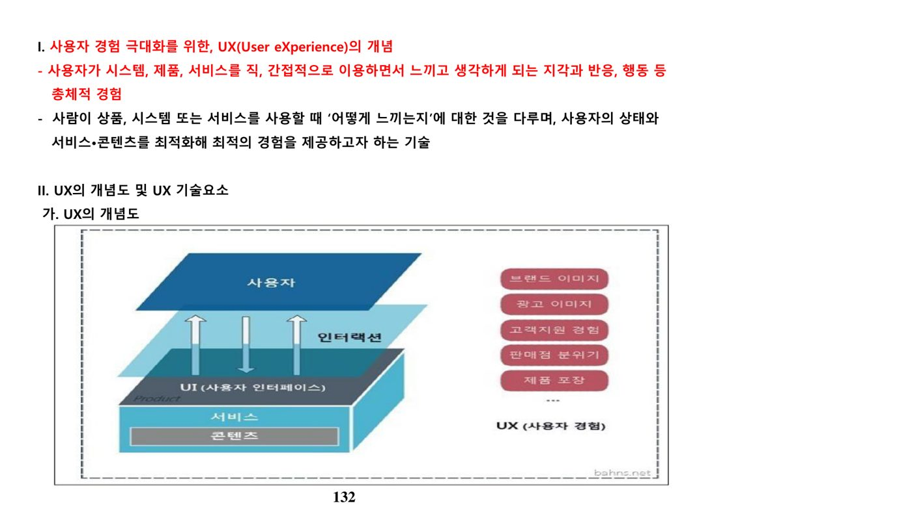
나. ISO 9241 — HCI 국제표준
ISO 9241은 인간-컴퓨터 상호작용의 인간공학을 다루는 다중 파트 국제표준으로, VDT(Visual Display Terminal) 작업의 인간공학적 요구사항, 키보드 디자인 가이드라인, 사용성(Usability) 지침, 대화상자 원칙 등을 포함한다. 다만 "HCI 개발 조직의 능력 성숙도 평가 가이드라인"은 ISO 9241의 범주에 포함되지 않으며 이는 CMMI·SPICE 계열의 프로세스 성숙도 모델의 영역이다.
13. SW 비용산정 개요와 LOC 방법 (원본 p.145-152)
가. 소프트웨어 비용산정의 개요
개발비용 산정은 소프트웨어 규모(양적 크기, 질적 수준)를 파악해 소요 공수·투입 자원·소요 기간을 산출함으로써 실행 가능한 계획을 수립하는 활동이다. 규모를 낮게 산정하면 품질·납기 문제와 개발자 부담이 커지고, 높게 산정하면 예산 낭비와 효율성 저하가 발생한다.
개발비 산정 절차는 ① 범위 정의 → ② 규모 산정(기능점수) → ③ 보정 전 개발비 산정 → ④ 개발비 산정(규모·어플리케이션 유형·언어·품질 특성 보정계수 적용) → ⑤ 직접경비 산정 순으로 진행되며, SW개발비 = 개발비 + 직접경비 + 이윤(개발비의 25% 이내)으로 산출된다.
나. 소프트웨어 규모산정 방법의 종류
| 산정방법 | 내용 |
|---|---|
| 하향식 산정방법 | 시스템을 이해한 후 경험적 단언과 개발자 합의(인력·크기·예산)로 산정. 전문가 감정과 델파이 방식 이용 |
| 상향식 산정방법 | 업무분류구조(WBS)를 정의하고 각 구성요소를 독립적으로 산정해 집계. LOC 기법, 개발단계별 인원수 기법 이용 |
| 수학적 산정방법 | 소프트웨어 비용산정의 자동화 — FP, COCOMO I·II |
다. LOC(Line of Code) 방법
LOC 방법은 원시 코드의 라인 수를 기준으로 비용을 산정하는 대표적인 상향식 기법이다. 모듈별로 낙관치·기대치(평균치)·비관치 3점 견적을 산출한 뒤 다음 공식으로 예측 LOC를 계산한다.
| 모듈 번호 | 낙관적 LOC | 기대치 LOC | 비관적 LOC | 예측 LOC |
|---|---|---|---|---|
| 1 | 250 | 500 | 750 | (250+500×4+750)/6 = 500 |
| 2 | 100 | 200 | 300 | (100+200×4+300)/6 = 217 |
| 3 | 200 | 600 | 1,000 | (200+600×4+1,000)/6 = 600 |
| 4 | 60 | 100 | 200 | (60+100×4+200)/6 = 110 |
위 4개 모듈의 총 작업량(예측 LOC 합계)은 500+217+600+110 = 1,427이 된다.
라. FP(Function Point)와 LOC의 비교
| 구분 | Function Point | LOC |
|---|---|---|
| 특징 | 기능 중심의 산정 | 크기 중심의 산정방법 |
| 장점 | 기능을 고려해 LOC의 단점을 보완 | 사용이 쉬움 |
| 단점 | 복잡도 산정에 주관이 개입 | 단순하고 코드 재사용을 무시 |
FP는 1979년 IBM이 고안한 방식으로, 정보처리 규모와 기능적 복잡도에 의해 소프트웨어 규모를 사용자 관점에서 측정한다는 점에서 개발자 관점(소스코드 양)의 LOC와 구분된다. 최종 사용자 입장에서 규모를 견적하며 개발환경·기술에 무관하게 측정 가능하고, 개발 중에도 측정할 수 있다는 장점이 있다.
14. Function Point(FP) 측정 방법 (원본 p.151-183)
가. FP 산출 프로세스(IFPUG 7단계)
기능점수는 IFPUG(International Function Point Users Group)가 제공하는 7단계 절차를 따라 산출한다.
- 측정 유형의 결정(개발/개선 프로젝트, 어플리케이션)
- 측정 범위와 애플리케이션 경계 식별
- 데이터 기능 측정(ILF, EIF)
- 트랜잭션 기능 측정(EI, EO, EQ)
- 미조정 기능점수 결정
- 조정 인자 결정(VAF)
- 조정 기능점수 결정
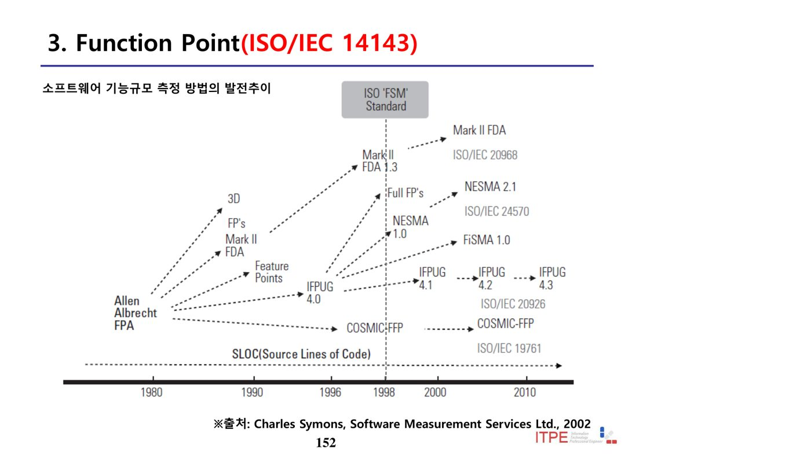
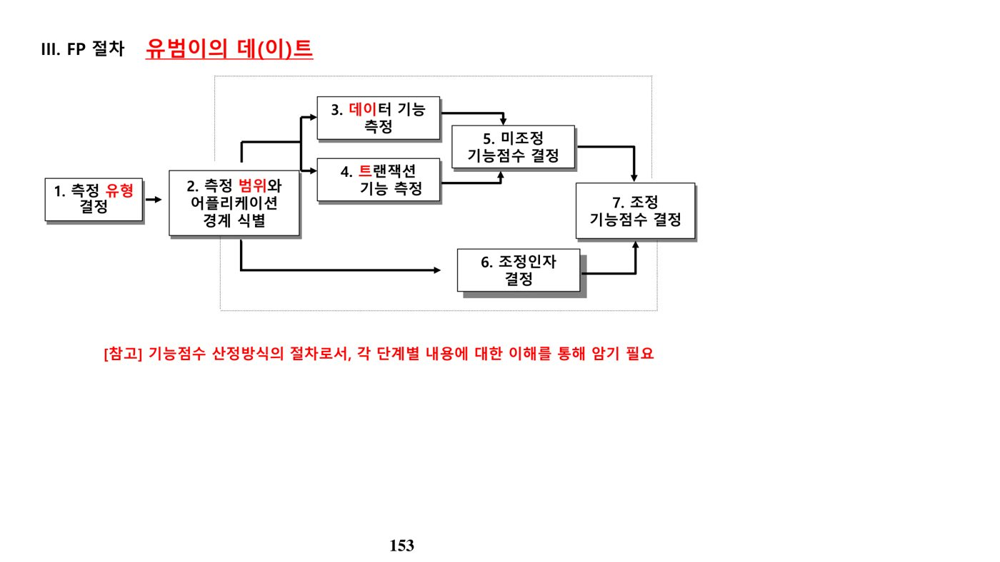
나. 정규법과 간이법
| 구분 | 정규법(정통법) | 간이법 |
|---|---|---|
| 개념 | 논리적 설계를 바탕으로 각 기능의 속성을 정의해 복잡도 매트릭에 의해 산정 | 개략적인 사용자 요구사항을 바탕으로 평균복잡도에 의해 산정 |
| 사용시기 | 상세한 기능점수 측정 — 분석/설계·개발·유지보수의 범위·일정·원가 산정 | 프로젝트 초기 측정 — 예산 수립, 제안서 견적, 계약의 사업대가 산정 |
| 측정항목 | 데이터 기능 및 DET·RET(3단계), 트랜잭션 기능 및 FTR·DET(4단계) | 데이터 기능, 트랜잭션 기능(평균 복잡도 적용) |
| 복잡도 | 기능별 복잡도 매트릭(Low/Avg/High) | 평균 복잡도(고정값) |
다. 데이터 기능 유형 — ILF와 EIF
| 유형 | 설명 |
|---|---|
| 내부논리파일(ILF, Internal Logical File) | 어플리케이션 경계 내에서 유지되는 논리적으로 연관된 데이터 그룹 |
| 외부연계파일(EIF, External Interface File) | 어플리케이션 경계 밖에서 참조되는(해당 어플리케이션에서는 유지하지 않는) 데이터 그룹 |
RET(Record Element Type, 레코드요소유형)와 DET(Data Element Type, 데이터요소유형)가 식별되면 아래 매트릭으로 복잡도와 기능점수 가중치를 산정한다.
| RET 개수 | DET 1~19 | DET 20~50 | DET 51 이상 |
|---|---|---|---|
| 1 | 낮음(7) | 낮음(7) | 보통(10) |
| 2~5 | 낮음(7) | 보통(10) | 높음(15) |
| 6 이상 | 보통(10) | 높음(15) | 높음(15) |
(위 표는 ILF 기준 가중치이며, EIF는 동일한 RET·DET 구간에서 낮음(5)/보통(7)/높음(10)의 가중치를 적용한다.)
라. 트랜잭션 기능 유형 — EI·EO·EQ
| 유형 | 설명 |
|---|---|
| 외부입력(EI, External Input) | App 안으로 들어오는 데이터·제어정보를 처리하는 단위 프로세스(입력·수정·삭제 각각 계산) |
| 외부출력(EO, External Output) | 어플리케이션 경계 밖으로 결과를 내보내는 처리 — 환율 적용 등 계산 로직을 포함해 파생 데이터를 생성 |
| 외부조회(EQ, External Query) | DB에 있는 데이터를 그대로(계산 없이) 조회해 밖으로 내보내는 처리 |
FTR(File Type Reference, 참조파일유형)은 트랜잭션 기능에 의해 읽히거나 유지되는 ILF 또는 읽히는 EIF를 의미하며, 트랜잭션의 DET는 경계를 넘나드는 사용자 인식 가능한 유일 속성의 개수를 센다.
마. 조정인자(VAF)와 14개 시스템 특성
조정인자(VAF, Value Adjustment Factor)는 프로젝트의 분류·난이도에 따라 0.65~1.35의 값을 가지며, 14개 항목 각각에 0~5점의 가중치를 부여해 조정인자 = (14개 항목 점수 합 × 0.01) + 0.65 공식으로 계산한다. 조정 기능점수는 미조정 기능점수 × 조정인자로 산출한다.
14개 조정 항목: 데이터 통신, 분산 데이터 처리, 성능, 사용환경(다중 이용 환경), 처리율(Transaction Rate), 온라인 데이터 입력, 최종사용자 편리성, 온라인 갱신, 처리 복잡성, 재사용성, 설치용이성, 운영용이성, 복수 사이트, 변경 용이성. ("개발자 생산성"은 14개 항목에 해당하지 않는 오답 선지로 자주 출제된다.)
바. 간이법의 평균복잡도
간이법에서는 정규법의 복잡도 매트릭 대신 다음의 고정된 평균 복잡도 값을 사용한다.
| 기능 유형 | 평균 복잡도 |
|---|---|
| EI(외부입력) | 4.3 |
| EO(외부출력) | 5.4 |
| EQ(외부조회) | 3.8 |
| ILF(내부논리파일) | 7.4 |
| EIF(외부연계파일) | 5.5 |
사. 간이법 계산 예제
내부논리파일(ILF) 3개, 외부연계파일(EIF) 1개, 외부출력(EO) 1개, 외부조회(EQ) 1개인 시스템의 미조정 기능점수를 간이법으로 산정하면 다음과 같다.
- 데이터 기능 측정: ILF 3×7.4=22.2, EIF 1×5.5=5.5 → 합계 27.7
- 트랜잭션 기능 측정: EO 1×5.4=5.4, EQ 1×3.8=3.8 → 합계 9.2
- 미조정 기능점수: 27.7+9.2 = 36.9
- 조정인자(14개 항목을 각 3점으로 가정): ((14×3)×0.01)+0.65 = 1.07
- 조정 기능점수: 36.9×1.07 ≈ 39.48
아. 관련 기출문제 — 기능점수와 개발 생산성
총 기능점수 7,500FP 규모의 프로그램을 5명이 30개월 동안 개발했다면, 프로그래머 1인당 월평균 생산성은 7,500 ÷ (5×30) = 50FP/월이다.
15. COCOMO / COCOMO II (원본 p.184-197)
가. COCOMO(Constructive Cost Model)의 개념
Barry Boehm이 개발한 COCOMO는 원시 코드의 라인 수(LOC)를 중심에 두고 개발 비용을 산정하는 알고리즘적 비용산정 모델이다. 원시 코드 라인 수가 많을수록 개발 비용이 많이 든다는 전제 하에, 이를 공식에 대입해 개발에 필요한 M/M(Man-Month)을 예측한다. 구조적 개발 방법론에 적용 가능하며, Organic(단순형)·Semi-Detached(중간형)·Embedded(내장형) 3가지 유형으로 소프트웨어를 구분해 총 인월 수와 개발 기간을 계산한다.
나. COCOMO의 3가지 모형
| 모형 | 내용 |
|---|---|
| Basic COCOMO | SW 개발 노력·비용을 LOC 형태로 추정하는 고정 단일값 모형. 50KDSI 이하 소규모에 적용 |
| Intermediate COCOMO | Basic의 확장. 제품 속성(3개)·HW 속성(4개)·인적 속성(5개)·프로젝트 속성(3개), 총 15개 특성치를 보정계수로 적용. 300KDSI 이하에 적용 |
| Detailed COCOMO | 대형 시스템에서 서브시스템별로 비용을 별도 산정해 합산. 모듈·서브시스템·시스템 3계층 비용 산정이 가능하며 생명주기 단계별로 산정 방식을 달리할 수 있음. 300KDSI 이상에 적용 |
Intermediate COCOMO의 15개 특성치는 다음과 같이 구성된다: 제품 속성(SW 신뢰도, DB 크기, 제품 복잡성), HW 속성(응답시간, 실행시간 성능제약, 기억장치 제약, 가상기계 환경의 휘발성), 인적 속성(분석가·프로그래머의 자질, 응용분야 경험, 컴퓨터 친숙성, 프로그래밍 언어 경험), 프로젝트 속성(개발기간 산정, 개발도구 사용, 방법론 응용).
다. COCOMO Basic 공식과 노력조정수치(EAF)
보정에 사용되는 값을 노력 조정 수치(EAF, Effort Adjustment Factor)라 하며, 필요한 항목의 노력 승수 값을 모두 곱해 산출한다(EAF는 0.9~1.4 사이 값). EAF가 반영된 유형별 노력(P/M, Person/Month)이 M/M이다.
| 프로젝트 유형 | 공식 |
|---|---|
| 단순형(Organic) | PM = 2.4 × (KDSI)1.05 × EAF |
| 중간형(Semi-Detached) | PM = 3.0 × (KDSI)1.12 × EAF |
| 내장형(Embedded) | PM = 3.6 × (KDSI)1.20 × EAF |
라. COCOMO II의 개념과 3가지 모델
COCOMO II는 구조적 방법론 중심의 COCOMO가 객체지향·컴포넌트 조립 개발 환경(1995년 이후)에 맞게 발전한 모델로, 요구 변경에 따른 추가 비용 계산과 SW 유연성 평가가 가능하다. 기본 공식은 E = b × Sc × m(X)이며, b×Sc는 기초 소요 노력 예측값(P/M), m(X)는 비용 승수의 벡터(지수 값)를 의미한다.
| 분류 | 응용 조합 모델(Application Composition) | 초기 설계 모델(Early Design) | 설계 이후 모델(Post Architecture) |
|---|---|---|---|
| 설명 | 초기 단계 시제품 개발 시 적용 | 개발 데이터가 충분치 않은 개발 초기단계에 사용 | SDLC상 구조 구현 단계 이후·유지보수 기간에 사용 |
| 크기 측정 | Application Points(응용 점수) | 비조정 기능점수(UFP) | SLOC(Source Lines of Code) |
마. 언어별 SLOC/UFP 환산 비율
COCOMO II에서 기능점수(UFP)를 원시코드 라인 수(SLOC)로 환산할 때는 언어별 기본 변환비율(Default SLOC/UFP)을 사용한다.
| 언어 | Default SLOC/UFP |
|---|---|
| Assembly(Basic) | 320 |
| C | 128 |
| Unix Shell Scripts | 107 |
| Java | 53 |
| Powerbuilder | 16 |
바. 관련 서술형 기출문제
CMMI의 Continuous Model과 Staged Model, 그리고 CMM/CMMI를 비교한 위 서술 문제 외에, COCOMO의 노력 승수 값 중 제품 속성(SW 신뢰도, DB 크기, 제품 복잡도)과 HW 속성(실행시간 제약 등)을 구분해 설명하는 문제가 자주 출제된다.
16. SW사업 대가산정 가이드 (원본 p.198-207)
가. SW 대가 산정의 정의와 특징
SW 대가 산정은 소프트웨어의 기획·구현·운영 등 수명주기 전 단계에 걸친 사업 추진 시, 예산수립·발주·계약 단계에서 적정 대가를 산정하기 위한 기준이다. 2012년 2월 26일 이후 정부 고시 형태에서 민간 이양 체계로 전환되었으며, ISO 12207 기반의 소프트웨어 수명주기(기획·구현·유지보수·운영) 전반에 걸쳐 설명하고 편리한 산정 도구를 제공한다.
나. 대가 산정 시점에 따른 유형
| 유형 | 설명 |
|---|---|
| 예산확보 단계 | SW사업의 예산 확보를 위해 사업비를 개괄적으로 산정 |
| 사업발주 단계 | 제안요청서 등을 작성하고 발주금액을 산정 |
| 사후정산 단계 | 사업 종료 후 실제 투입 비용과 집행 비용의 차이를 파악해 정산 대가를 산정 |
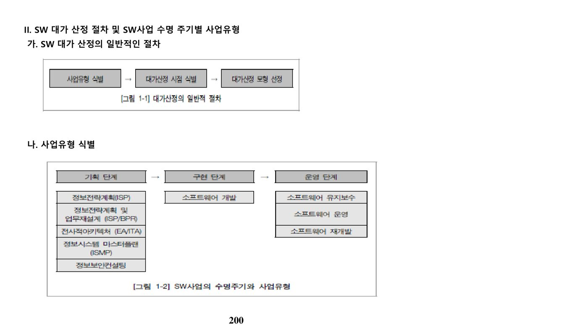
다. 수명주기별 대가산정 모형
| 수명주기 | 대상 사업유형 | 대가산정 모형 |
|---|---|---|
| 기획단계 | 정보전략계획(ISP), 전사적 아키텍처(EA/ITA), 정보시스템 마스터플랜(ISMP) | 컨설팅지수방식/투입공수방식 수립비 |
| 구현단계 | 소프트웨어 개발 | 기능점수방식(정통법/간이법) 개발비, 투입공수방식 개발비 |
| 운영단계 | 소프트웨어 유지보수·운영·재개발 | 요율제 유지보수비, 투입공수방식 운영비, 고정비/변동비방식, SLA기반 정산법, 재개발비 |
소프트웨어 개발 규모(기능점수)에 의한 개발비 산정에는 개발원가, 직접경비, 이윤이 사용되며, 간접경비는 이 산정 요소에 포함되지 않는다는 점이 기출에서 자주 다뤄진다.
라. 관련 서술형 기출문제
소프트웨어 프로젝트 품질보증의 일환으로 품질감사를 시행할 때의 전체 프로세스와 프로세스별 수행내용, 시스템 구현단계 감사대상 산출물과 체크포인트를 제시하시오. (관리 80회 2교시)
📚 전체 기출·예상문제 (29문항) — 원문 수록
본 강좌 원본 PDF에 수록된 기출·예상문제를 빠짐없이 원문 그대로 정리했습니다. 정답·해설은 강의 원문 기준입니다.